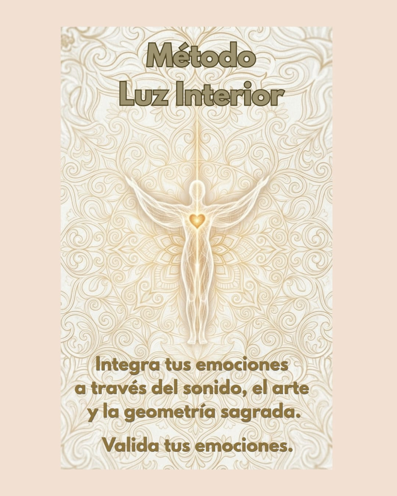

¿Y si en lugar de luchar contra lo que sentís, lo integrás?
A veces la ansiedad, el miedo o la culpa se sienten como nudos que no sabemos cómo desatar. Te invito a una experiencia de 60 minutos para reconocer, aceptar y soltar lo que ya no necesitás cargar.
A través de la frecuencia, la aceptación y la pintura, reconocemos y aceptamos esa emoción que tanto te cuesta en tu día a día: ansiedad, tristeza, miedo, culpa, enojo.
En esta sesión vas a recibir: música de alta frecuencia para calmar tu sistema nervioso, meditación con cristales para sintonizar con la tierra, pintura terapéutica para que el inconsciente se exprese, y una guía de 10 días para tu integración emocional en casa.
No se trata de "dejar de sentir", sino de aprender a escuchar qué te viene a decir cada emoción. Regalate este espacio de paz y recalibración emocional.
$1.800
Consultar por WhatsApp